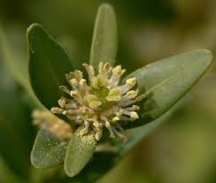

Buxaceae
Boxwood Family / Box Family
Buxaceae is a family of about 5-6 genera and 120-130 species, primarily comprising evergreen shrubs and trees, along with some perennial herbs (Pachysandra). The family includes the well-known Boxwood (Buxus), valued for hedging and woodcarving. Key features include simple, often leathery leaves, small, unisexual, apetalous (lacking petals) flowers in dense clusters, a superior ovary with distinct persistent styles, and typically a capsule or drupe fruit. Buxaceae occupies a unique position as an early-diverging lineage of core eudicots, placed in its own order, Buxales.
Overview
The Buxaceae, or Boxwood family, is relatively small but widely recognized due to the horticultural and economic importance of Buxus (Boxwood). The family includes mostly evergreen shrubs and trees, but also the herbaceous groundcover genus Pachysandra (Spurges). Recent classifications (APG IV) also include the genus Didymeles (formerly Didymelaceae), endemic to Madagascar, within Buxaceae. The family has a scattered global distribution across temperate, subtropical, and tropical regions of Europe, Asia, Africa, and the Americas, but is notably absent from Australasia.
Members are characterized by simple, often leathery leaves (opposite in Buxus, alternate in Pachysandra, Sarcococca), and small, inconspicuous, unisexual flowers that lack petals. The flowers are typically clustered tightly in spikes or heads. The fruit is commonly a capsule that often bears persistent horn-like styles (Buxus), or sometimes a fleshy drupe (Sarcococca).
Phylogenetically, Buxaceae holds a special position. It represents an early-diverging lineage of the core eudicots, placed in its own order, Buxales. It is not closely related to the major Rosid or Asterid clades, instead branching off near the base of the core eudicot tree, potentially near Gunnerales or Trochodendrales.
Quick Facts
- Scientific Name: Buxaceae
- Common Name: Boxwood Family, Box Family
- Number of Genera: Approximately 5-6 (incl. Didymeles)
- Number of Species: Approximately 120-130
- Distribution: Widespread but scattered in temperate, subtropical, and tropical regions (Europe, Asia, Africa, Americas).
- Evolutionary Group: Eudicots -> Buxales (Basal Core Eudicot lineage)
- Habit: Evergreen shrubs/trees, some perennial herbs (Pachysandra).
Key Characteristics
Growth Form and Habit
Mostly evergreen shrubs or small trees (Buxus, Sarcococca, Styloceras, Didymeles), rarely deciduous. Pachysandra consists of rhizomatous perennial herbs. Plants are typically monoecious (male and female flowers on the same plant), less often dioecious.
Leaves
Leaves are simple, arranged alternately (Pachysandra, Sarcococca, Didymeles) or oppositely (Buxus, Styloceras). They are typically leathery (coriaceous) with entire margins (sometimes slightly toothed). Stipules are generally absent or minute and vestigial. Leaves of Buxus often have a characteristic scent when crushed.
Flowers and Inflorescence
Flowers are small, inconspicuous (greenish or yellowish), unisexual, and radially symmetrical (actinomorphic). They are arranged in dense axillary or terminal spikes, racemes, or head-like clusters. A defining feature is the complete absence of petals (apetalous).
- Perianth: Consists only of sepals (or sepal-like tepals), usually 4 in male flowers (in 2 pairs) and 4-6 in female flowers. (Didymeles may lack a perianth).
- Petals: Absent.
- Male Flowers: Typically have 4 stamens positioned opposite the sepals (Buxus), or 6 to numerous stamens (Pachysandra, Sarcococca). Filaments are distinct. A rudimentary pistil (pistillode) is often present.
- Female Flowers: Lack functional stamens (staminodes may be present). The ovary is superior, composed of 2 (Didymeles) or typically 3 (rarely 2 or 4) fused carpels forming 2 or 3 locules. Placentation is axile or apical-axile, with usually 1 or 2 pendulous ovules per locule. Styles are distinct (separate or only basally fused), persistent, often stout and recurved, bearing stigmatic surfaces along their inner side or tip.
Fruits and Seeds
The fruit is most commonly a dry, loculicidal capsule, which typically bears the persistent, horn-like styles at its apex (giving a 3-horned appearance in Buxus and Pachysandra). Alternatively, the fruit can be a fleshy drupe (Sarcococca, Didymeles).
Seeds are usually few, often black and shiny, possessing a fleshy endosperm.
Chemical Characteristics
Plants in this family are known to produce steroidal alkaloids (such as buxine in Buxus), which can make them toxic if ingested. Triterpenoids are also common. Buxus wood is famously hard, heavy, and fine-grained.
Field Identification
Identifying Buxaceae involves recognizing the combination of evergreen habit (mostly), simple leathery leaves, apetalous unisexual flowers, distinctive ovary/style structure, and characteristic fruits:
Primary Identification Features
- Habit: Evergreen shrub or tree (less commonly herb - Pachysandra).
- Leaves: Simple, leathery, mostly entire, alternate OR opposite, lacking stipules.
- Flowers: Small, greenish/yellowish, lacking petals (apetalous), unisexual (monoecious or dioecious), borne in dense clusters/spikes/heads.
- Ovary/Styles (Female Flower): Superior ovary (usually 3-carpellate) with distinct, persistent, often recurved styles.
- Fruit: Typically a 3-horned capsule (Buxus, Pachysandra) or a drupe (Sarcococca, Didymeles).
Secondary Identification Features
- Sepals: Usually 4 in male flowers, 4-6 in female flowers.
- Stamens: 4 or 6-numerous in male flowers.
- Scent: Buxus leaves often have a distinctive pungent smell when crushed.
- Wood: Buxus wood is very hard and dense.
Seasonal Identification Tips
- Year-round: Evergreen leaves (opposite in Buxus, alternate in others) and woody habit (except Pachysandra) are constant features.
- Flowering Season: Small, inconspicuous flowers appear seasonally (often spring), clustered in leaf axils or terminally. Their lack of petals is key.
- Fruiting Season: The 3-horned capsules of Buxus are very distinctive and often persist. The fleshy drupes of Sarcococca mature later.
Common Confusion Points
- Opposite-leaved shrubs (Buxus): Can be confused with other evergreen shrubs with opposite, simple, entire leaves (e.g., some Celastraceae, Caprifoliaceae, Rubiaceae). However, these families typically have flowers with petals, often bisexual flowers, and different ovary/fruit structures (e.g., inferior ovaries in Rubiaceae/Caprifoliaceae, different capsules/berries/drupes).
- Alternate-leaved shrubs/herbs (Sarcococca, Pachysandra): Can be confused with various other plants, but the combination of apetalous, unisexual flowers in dense clusters, superior ovary with distinct styles, and specific fruit type (drupe or horned capsule) helps differentiate them. Sarcococca is noted for fragrant winter flowers.
The apetalous unisexual flowers, superior ovary with separate persistent styles, and the resulting 3-horned capsule or drupe are key features for identifying Buxaceae. Its unique phylogenetic position also sets it apart.
Field Guide Quick Reference
Look For:
- Evergreen shrub/tree (or herb Pachysandra)
- Leaves simple, leathery, entire (mostly)
- Leaves alternate OR opposite
- No stipules
- Flowers small, greenish, APETALOUS, unisexual
- Flowers in dense clusters/spikes
- Ovary superior, 2-3 carpels
- Styles distinct, persistent, often recurved
- Fruit 3-horned capsule OR drupe
Key Variations:
- Habit (shrub/tree vs. herb)
- Leaf arrangement (opposite vs. alternate)
- Stamen number (4 vs. 6+)
- Fruit type (capsule vs. drupe)
Notable Examples
The family includes important horticultural plants and species known for their wood.

Buxus sempervirens
Common Boxwood, European Box
A dense evergreen shrub or small tree native to Europe, North Africa, and Western Asia. Widely cultivated for topiary, hedging, and its hard, fine-grained wood used for carving and instruments. Characterized by opposite, small, leathery leaves and 3-horned capsule fruits.

Pachysandra terminalis
Japanese Spurge
A low-growing, rhizomatous perennial herb native to East Asia, commonly used as an evergreen groundcover for shady areas. Has alternate, toothed leaves clustered near the stem tips and produces spikes of small, whitish, apetalous flowers followed by whitish drupe-like fruits (sometimes capsules).

Sarcococca confusa (and related spp.)
Sweet Box
Evergreen shrubs native to Asia, valued in gardens for their shade tolerance, glossy alternate leaves, and highly fragrant but inconspicuous white apetalous flowers produced in winter. Produces fleshy black drupe fruits.
Didymeles species
Endemic to Madagascar, now included in Buxaceae. Dioecious trees with alternate leaves and drupe fruits.
Phylogeny and Classification
Buxaceae holds a significant phylogenetic position as an early-diverging lineage of core eudicots. It is placed in its own order, Buxales, by the Angiosperm Phylogeny Group (APG IV). This order is small, potentially containing only Buxaceae (including the formerly separate family Didymelaceae based on molecular evidence) and possibly the enigmatic Haptanthaceae.
Buxales is not part of the major Rosid or Asterid clades. Instead, it branches off near the very base of the core eudicot tree, along with other small orders like Trochodendrales and Gunnerales. Its exact sister group relationship is still debated, but it is clearly separate from the large majority of eudicot diversity. This isolated position means Buxaceae retains a unique mix of ancestral and derived characters, crucial for understanding the early evolution of core eudicots.
Position in Plant Phylogeny
- Kingdom: Plantae
- Clade: Angiosperms (Flowering plants)
- Clade: Eudicots
- Order: Buxales
- Family: Buxaceae
Evolutionary Significance
Buxaceae is highly significant for understanding eudicot evolution:
- Basal Core Eudicot Lineage: Its position near the base of the core eudicot radiation makes it critical for reconstructing ancestral traits and understanding the early diversification of this massive plant group.
- Phylogenetic Relationships: Helps clarify the relationships among the earliest branching lineages of core eudicots (Buxales, Gunnerales, Trochodendrales).
- Morphological Characters: Possesses a combination of features (e.g., apetalous flowers, separate styles, alkaloid chemistry) that provide insights into character evolution across eudicots.
- Biogeography: The family's scattered global distribution suggests an ancient origin and complex history possibly related to continental drift and subsequent extinction or dispersal events.